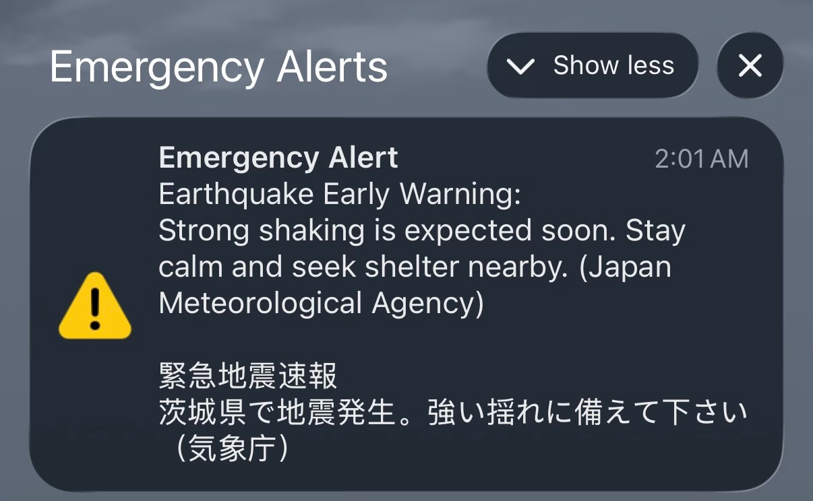
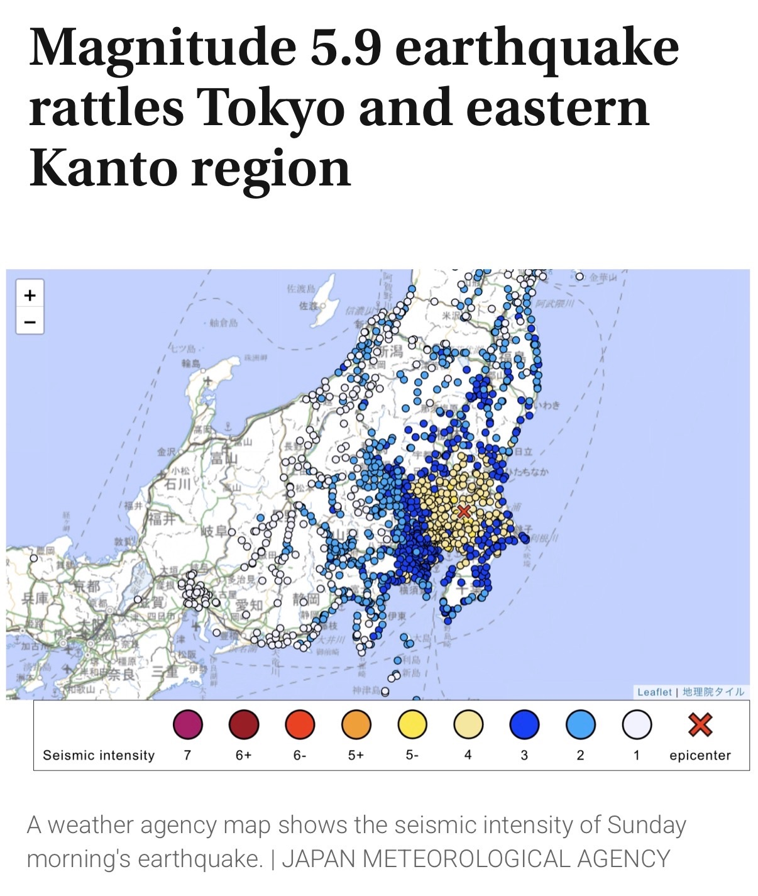

A 2:01 AM Wake-Up Call: Our First Earthquake Experience in Japan


There’s nothing quite like being jolted awake in the dead of night by a blaring, high-pitched alarm you’ve never heard before.
At exactly 2:01 AM, our phones simultaneously erupted with Japan’s Earthquake Early Warning system. The screen flashed in bold English and Japanese: "Strong shaking is expected soon. Stay calm and seek shelter nearby."
Heart pounding, we lay frozen for a second, waiting for the room to start violently swaying. As first-timers experiencing seismic activity in Japan, our adrenaline was instantly at 100%. We braced ourselves, half expecting furniture to slide and walls to rattle.
Then… almost nothing.
We felt a faint, subtle vibration—a minor tremor that you might easily miss if you were already fast asleep or walking outside. Within a few seconds, it passed completely, leaving us sitting in the dark, wide awake, and wondering if that was really it.
Checking the news the next morning put everything into context. A magnitude 5.9 earthquake had struck the eastern Kanto region, with its epicenter located in Ibaraki Prefecture. While areas closer to the center registered stronger shaking, our location only caught the outer edge of the wave.
It was a fascinating introduction to Japan’s incredible early-warning technology. Even for a quake that felt like a mild nudge where we were, the nationwide alert system did its job perfectly—giving millions of people a crucial head start to get to safety just in case.
It turns out our very first "quake" was mostly just a dramatic wake-up call, but it was certainly an unforgettable welcome to life in Japan!